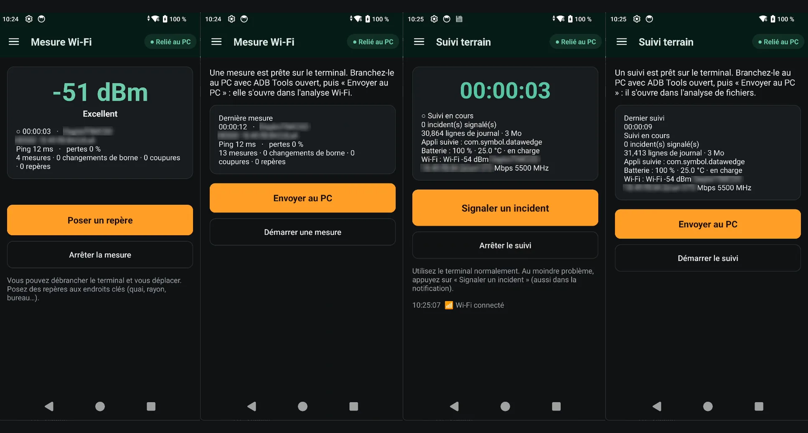
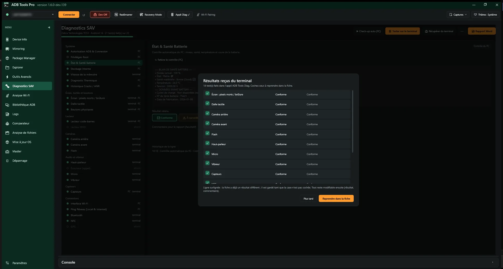
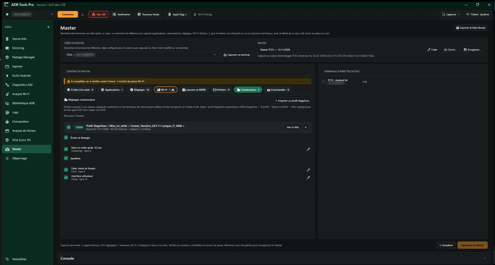
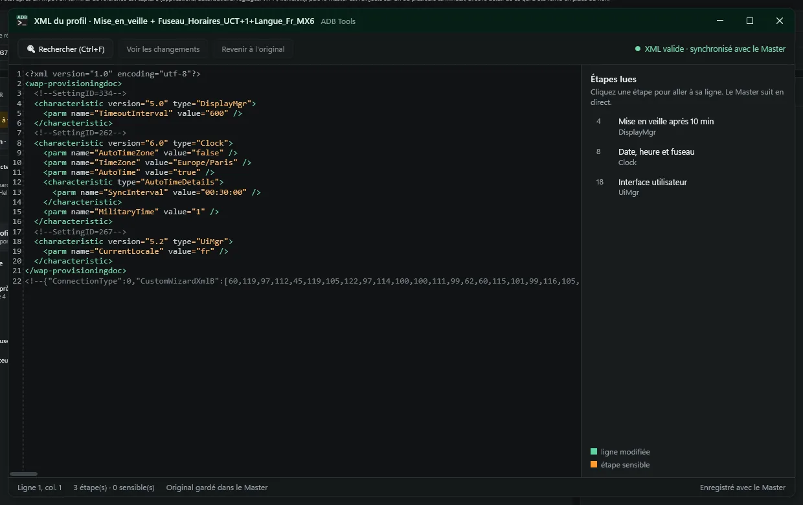
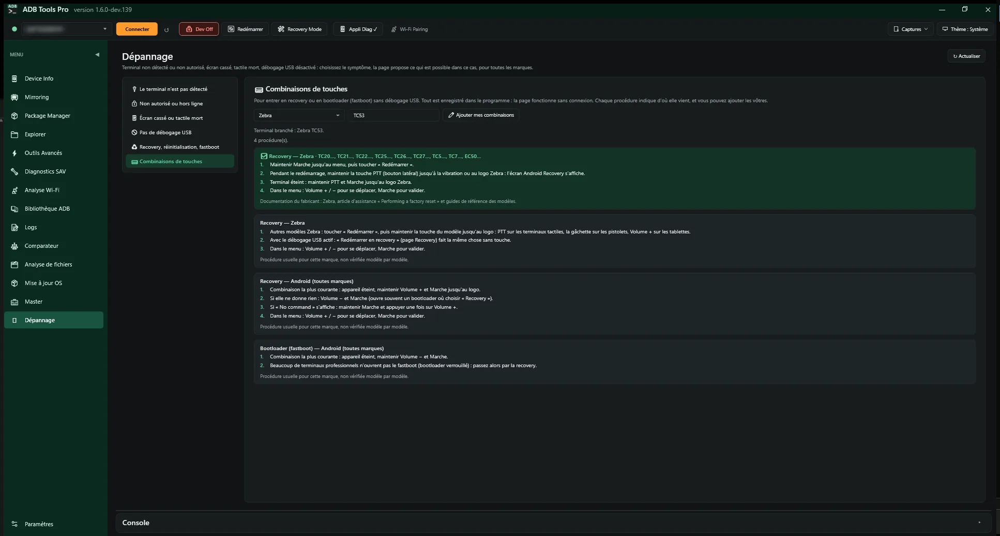
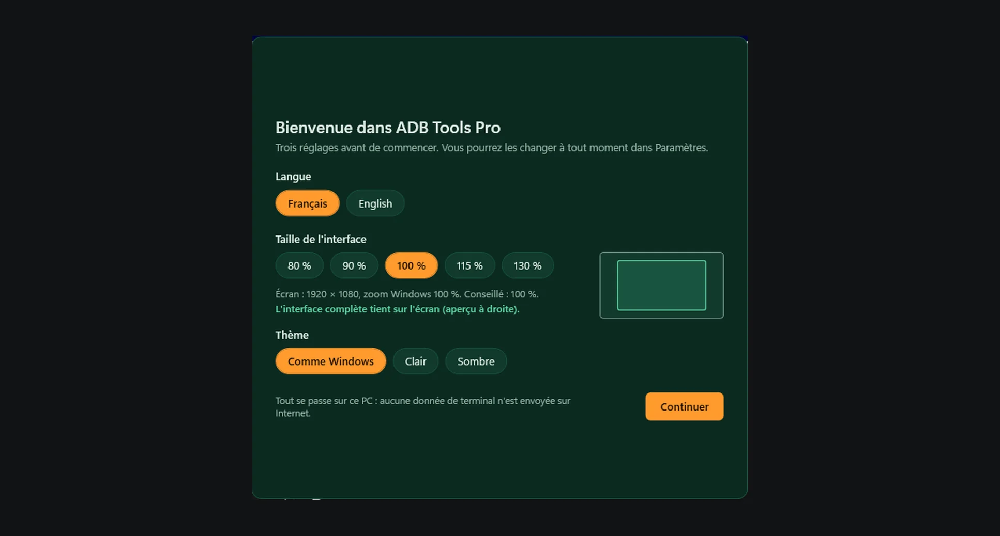

The Android support technician's toolbox
Diagnose, test and fix a smartphone, a tablet or a rugged logistics device from a Windows PC. Free, open source, and not a single command line to type.

A device comes back for repair
ADB Tools Pro helps you find what is wrong, hardware, network or software, then prove it with a clean Word report for the customer. It works with every brand: Zebra, Honeywell, Datalogic, Samsung and the rest.
Parts of the screen stopped responding
A single sheet, one line per part of the device. Test the touch panel in the ADB Tools Diag app or live from the PC, and the swiped grid shows up in the sheet. Buttons, dead pixels, cameras, sound, vibrator, sensors, NFC, GPS, RFID: every result stays editable on the PC and goes into the report.Diagnostics, Diag app
Wi-Fi keeps dropping in the warehouse
The Diag app measures Wi-Fi on its own, device unplugged, while you walk the site: signal, access point, channel and ping every second, with markers like “Dock 3”. Back at the PC, “Send to the PC”: charts, access point changes, drops and a summary per zone.Wi-Fi analysis, Diag app
The scanner won't read anything
The Diag app shows every scan, its symbology and the time since the trigger was pressed, through DataWedge or keyboard input. Missed reads and mismatches against a sheet of expected codes stand out straight away.Diagnostics, Scanner
The app crashes, but never while you're watching
The Diag app's field monitoring keeps the Android log for hours with the device unplugged. The user reports the incident with one tap. Back at the PC, ADB Tools opens the record on the incident and shows what changed just before it.File analysis, Field monitoring
The whole fleet needs the latest version
Plug the devices in, choose the manufacturer's package or your package folder: each one gets the right package, at the same time, after checking its model, version and battery. On return, the new version is checked and the customer's apps are reinstalled; the summary goes to Excel.OS update
The device is back from a wipe, everything must be set up again
Capture a reference device already set up for the customer: apps, permissions, settings, language, time, Wi-Fi, launcher, MDM. Add your StageNow profiles for Zebra settings. Complete what cannot be retrieved, then reinject it onto one or several devices. Each one is analyzed before sending, and the report shows what was restored or not.Master
Broken screen, USB debugging turned off
Pick the symptom: the page explains the cause and offers what is still possible. Keyboard and mouse control over the cable, data recovery, recovery mode, and each brand's key combinations, available even with no device plugged in.Troubleshooting
Everything it does
Every tool runs on ADB, Google's official tool, behind an interface built for field work.
Dashboard
- Battery, memory, CPU and storage as colour-coded gauges.
- Model, Android version, build, serial number, display.
- Several devices plugged in, one command run on all of them.
- Wireless connection, on Android 10 and older as well as 11 and newer.
Mirroring
- The device screen shown and controlled on the PC (scrcpy).
- Screenshots and screen recording.
- Company, model and date watermark for repair evidence.
Diagnostics New in 1.7
- A single sheet: one line per part, tested by the PC, by the Diag app, or both.
- Automatic check-up: Wi-Fi, ping, battery, storage, sensors, temperatures.
- Device results retrieved in one click; status and comment editable, history per line.
- Comparator: two devices, or a device and its approved reference.
ADB Tools Diag app New in 1.7
- On the device, plugged in or not: screen, touch, keys, cameras, flash, sound, microphone, vibrator, sensors, scanner, RFID, NFC, GPS, Bluetooth, memory.
- Cable-free Wi-Fi survey and field monitoring, then “Send to the PC”.
- Only the tests the model supports are offered.
- Installed and removed in one click from ADB Tools, or from the device.
Wi-Fi analysis
- Live latency, packet loss and signal charts.
- Access point changes and disconnections detected.
- Cable-free survey while you walk the site, with a summary per zone.
Logs
- Automatic analysis: crashes, ANRs, memory, Wi-Fi, battery, scanner, with advice for each problem.
- File analysis: Zebra RxLogger archive, bugreport or logcat, timeline per topic, jump to the incident.
- Reboots and their cause, business app lifecycle, your team's known faults.
- Field monitoring with one-tap incident reports.
OS update
- Several devices at once, each with its own progress.
- Over the cable, copy to device storage, or fastboot.
- Model, version and battery checked before sending; the right package picked per model.
- Version checked on return, apps installed, Excel summary.
Master
- Restore after a wipe: capture a reference device, or create the Master by hand.
- Apps, settings in plain words, language and time, Wi-Fi, launcher, MDM, files copied wherever you want.
- Manufacturer settings: Zebra StageNow profiles imported, merged, editable in an XML editor, applied only on the right brand.
- Each device analyzed before sending, choice per app according to its version.
- Report of what was restored or not, Excel export.
Troubleshooting New in 1.7
- By symptom: device not detected or not authorized, broken screen, dead touch, no USB debugging.
- Keyboard and mouse control over the cable (OTG), data recovery.
- Recovery, reset, fastboot, and key combinations per brand you can extend.
Apps and tools
- Install APKs by drag and drop, split APKs included.
- Device file explorer.
- Simulated buttons, brightness, display, sound.
- ADB command library you can extend with your own.
Reports, teams and comfort
- Word reports with your letterhead and logo, customisable templates.
- History per serial number, shareable on a network folder.
- Team profile: one file to set up every PC the same way.
- Verified updates installed in one click.
- Light, dark or same as Windows; interface in English or French.
- First launch: language, interface size suggested for the screen, theme; then a guided tour.
Screenshots
Dark theme, on Zebra TC58 and TC53 devices (French interface, English available). Serial numbers, networks and customer names are masked. Click to enlarge.















Get started in three steps
-
Download
Get
ADBToolsPro-x.y.z.zipfrom the releases page and unzip it anywhere. Nothing is installed into Windows. -
Run
Open
ADBToolsNew.exe. On first launch, ADB Tools offers to download ADB and scrcpy from their official sites, about 20 MB. -
Plug in the device
Turn on developer options, then USB debugging, plug in the cable and accept the authorisation prompt on the device screen.
You need Windows 10 or 11 with .NET Framework 4.7.2 or newer, already present on an up-to-date Windows. From then on, the program updates itself from GitHub or from your team's shared folder.
Everything stays on your PC
No report, screenshot or device data is ever sent over the Internet. No account, no ads, no analytics.
The code is open, so anyone can check what the program does, under the GNU GPL v3 licence.
The only connections download third-party tools from their official sources and check for updates, at most once a day:
dl.google.comADB and Fastbootgithub.comscrcpy and updateswww.gyan.devFFmpeg, only for video watermarks
Frequently asked questions
Is it really free?
Yes, and open source: ADB Tools Pro is released under the GNU GPL v3. You can use it at work, share it with your team and read its code.
Which devices are supported?
Any Android device where USB debugging can be turned on: Zebra, Honeywell, Datalogic, Newland and Urovo rugged devices, phones and tablets. Device tests work from Android 8 to Android 16; a test a model can't run is greyed out.
Do I need to install anything on the device?
Not for most features. Device tests, the scanner, the Wi-Fi survey and field monitoring go through the ADB Tools Diag app: one click on “Diag app” installs it, and it can stay on the device to work without a PC. It is removed in one click, from ADB Tools or from its own “Remove the app” menu. The Master also uses a small icon-less app for Wi-Fi, language and Zebra settings.
The device has no USB debugging, or its screen is broken
The Troubleshooting page starts from the symptom and says what is still possible: keyboard and mouse control over the cable, data recovery, recovery mode and each brand's key combinations. The explanations are stored in the program and show even offline.
Windows shows a warning on first launch
The program isn't signed with a paid certificate, so SmartScreen may say “Windows protected your PC”. Click “More info”, then “Run anyway”. You can compare the archive's SHA-256 hash with the one published on the release page.
Can reports carry our company branding?
Yes. Your company, contact details and logo appear in the header, and the Word templates can be edited in Word or replaced with your own, using tags like {{SOCIETE}} or {{NUMERO_SERIE}}. A team profile applies the same settings to every PC.
Where can I ask a question or report a problem?
Questions go to Discussions, bugs and ideas to issues. Remember to remove network names, company names and serial numbers from screenshots.